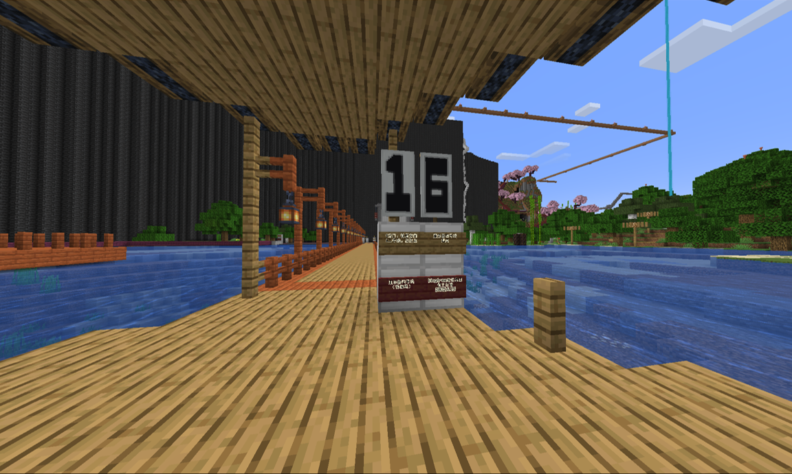
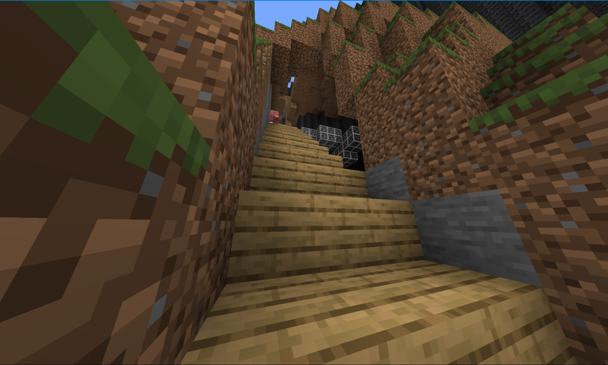
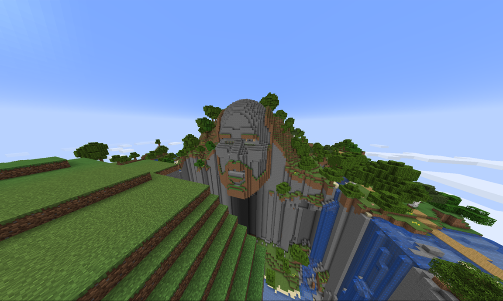

近日，据树王建设集团消息称，服务器四号线（主城轮船港湾-notch神庙）已经建设完成。该线路途径奇峰俊石，轮船港湾等地

起点图像

奇峰俊石图像
据树王建设集团所述，原来惊奇填出了一个神庙，为了让更多人了解到这个神庙，并且也顺带着为以后调生存模式做准备，我们 特地建筑了这条线路。
四号线全程用橡木板，不仅原料丰富，取材也很简单

终点神庙图像
去四号线方法：从出生点走二号线到轮船港湾，在轮船港湾尽头即可找到四号线。
树王服务器社2024年7月9日电